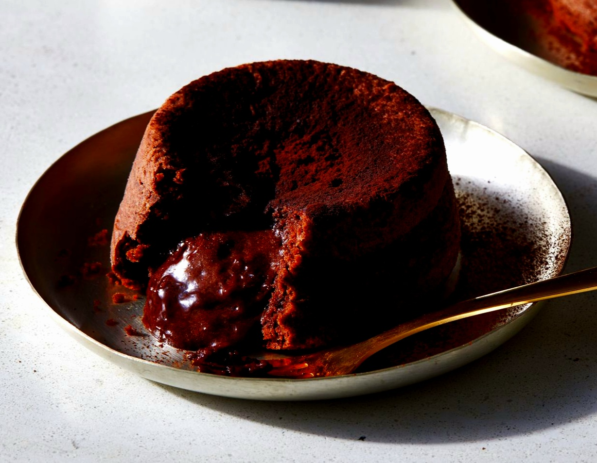

MOLTEN CHOCOLATE CAKES

It seems as though every restaurant in America offers a version of this amazing cake created by master chef Jean-Georges Vongerichten. But his supremely rich and chocolaty original is in a class by itself. Here, I would like to present his perfect recipe. Molten chocolate cakes became famous for a reason: they're cakey on the outside with an irresistible center of warm dark chocolate flowing through the middle. The first time you try one, it may seem like magic, but this recipe is actually quite easy to make and ready in under an hour.
INGREDIENTS
- 1 stick (4 ounces) of unsalted butter
- 6 ounces of bittersweet chocolate, preferably Valrhona
- 2 eggs
- 2 egg yolks
- ¼ cup of sugar
- a pinch of salt
- 2 tablespoons of all-purpose flour
INSTRUCTIONS
- Preheat the oven to 450 degrees F. Butter and lightly flour four 6-ounce ramekins. Tap out the excess flour. Set the ramekins on a baking sheet.
- In a double boiler, over simmering water, melt the butter with the chocolate. In a medium bowl, beat the eggs with the egg yolks, sugar, and salt at high speed until it’s thickened and pale.
- Whisk the chocolate until it's smooth. Quickly fold it into the egg mixture along with the flour. Spoon the batter into the prepared ramekins and bake for 12 minutes, or until the sides of the cakes are firm but the centers are soft. Let the cakes cool in the ramekins for 1 minute, then cover each of them with an inverted dessert plate. Carefully turn each one over, let stand for 10 seconds and then unmold. Serve immediately.
Return to Eva's Delicious Recipes